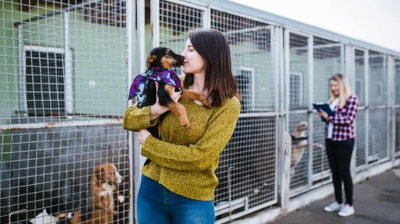
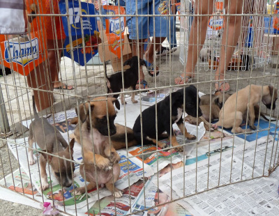

Bem-vindo à ONG Amor de Pata
A ONG Amor de Pata é uma organização sem fins lucrativos dedicada ao resgate, reabilitação e adoção de animais em situação de abandono.
Nosso propósito é dar uma nova chance a cães e gatos, promovendo amor, responsabilidade e respeito à vida animal.
Nossa missão é transformar vidas ❤
O que fazemos 🐶🐱
- Resgate: Salvamos animais vítimas de maus-tratos ou abandono.
- Reabilitação: Oferecemos cuidados veterinários, vacinas e castração.
- Adoção Responsável: Conectamos pets resgatados a novas famílias.
- Conscientização: Realizamos campanhas educativas sobre posse responsável.
Como Ajudar 🫶
Junte-se a nós nessa causa e ajude a transformar vidas!
- Faça uma doação e ajude com ração, remédios e tratamentos.
- Torne-se voluntário em nossos eventos e mutirões.
- Adote um amigo peludo e ganhe amor em dobro.